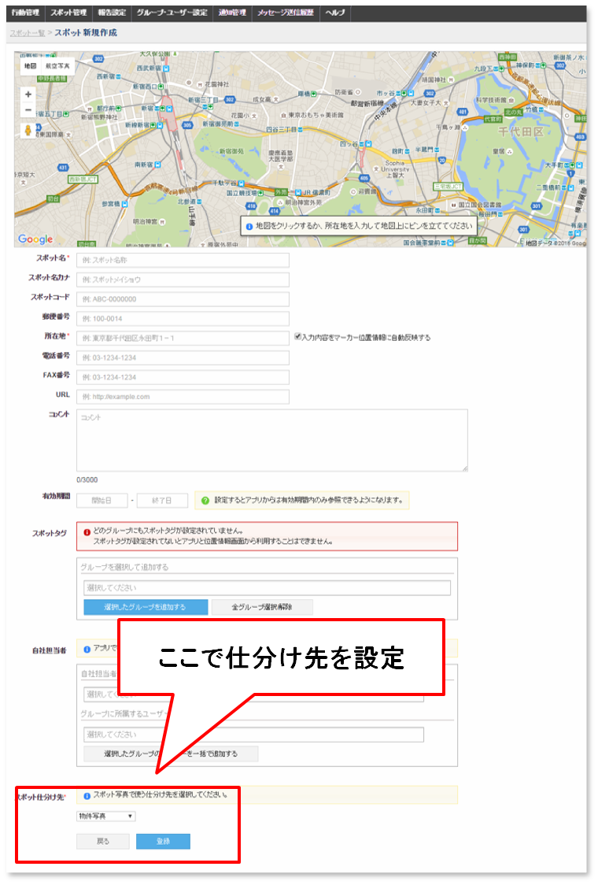
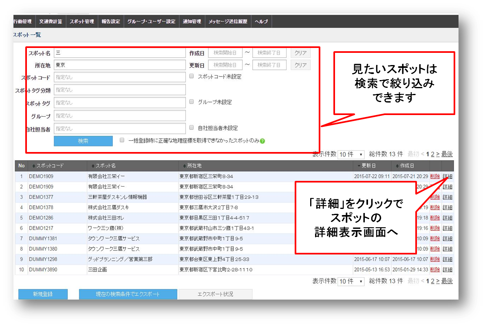
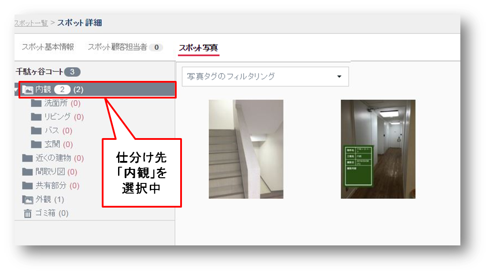
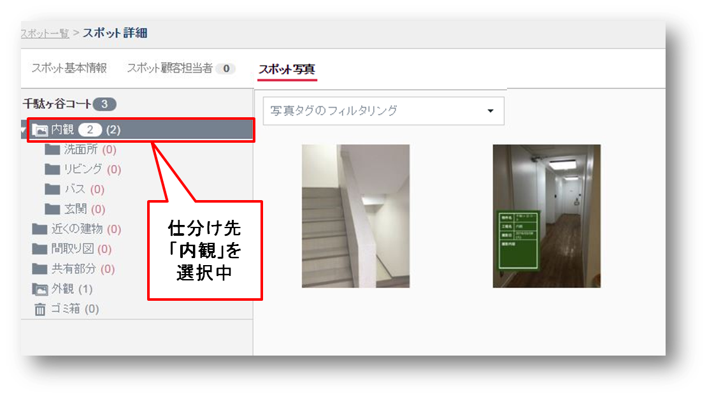
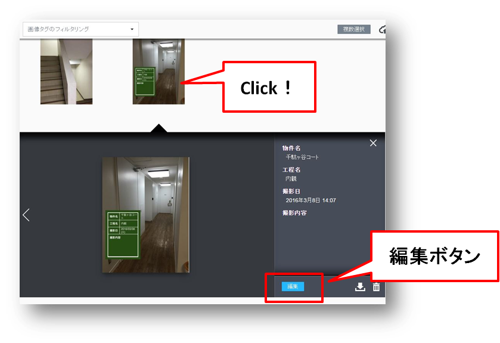
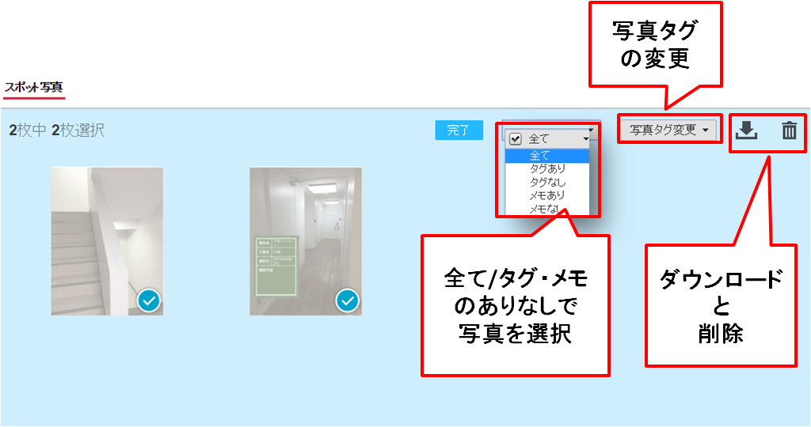
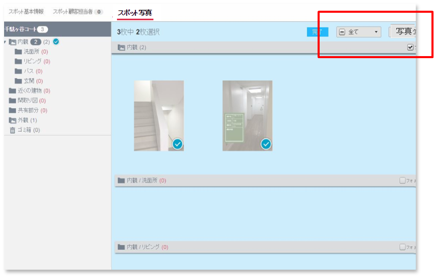
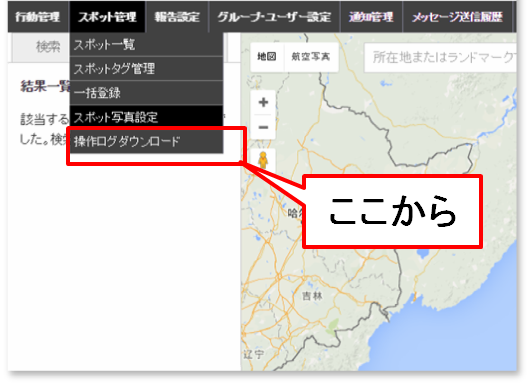
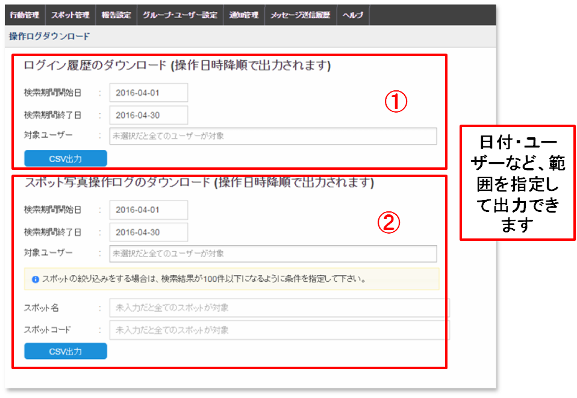

3 Web画面の運用¶
3-1 スポットに仕分け先を設定する¶
スポットの新規登録をするときに、仕分け先を設定します。メニューバーの「スポット管理」＞「スポット一覧」をクリックし、「新規登録」ボタンを押します。

「スポット新規作成」画面になります。「写真の仕分け先の設定」は一番下で設定します。
3-2 アプリから送信された写真を閲覧する¶
メニューバーの「スポット管理」＞「スポット一覧」の画面でスポットを選択肢、一番右端の「詳細」をクリックで、スポットの詳細画面になります。
スポットの件数が多い場合は検索して絞り込みます。
スポット詳細画面は「基本情報」「顧客担当者」「写真」の３つをタブで切り替えます。「スポット写真」タブをクリックで、写真一覧になります。

スポット名を選択しているときはすべての写真を、仕分け先項目を選択すると仕分け先ごとの写真が閲覧できます。
 

3-3 スポット写真を編集する¶
写真をクリックすると、写真に連携している情報（メタデータ）を確認できます。
「編集」ボタンをクリックすると、情報の一部を編集できます。「更新」ボタンで編集を完了します。 （「撮影日時」「撮影者」などは編集できません。）

3-4 スポット写真のタグ編集・ダウンロード・削除¶
スポット写真をタグあり・タグなしなどでまとめて選択することができます。 「写真タグの変更」「選択した写真のダウンロード・削除」ができます。
上と同じ操作を「全写真ビュー」からも行うことができます。 違う仕分けにまたがって写真を同時に選択できます。
3-7 データをダウンロードする¶
メニューバー「スポット管理」タブの「操作ログダウンロード」をクリックします。
「①ログイン履歴のダウンロード」はユーザーがアプリからログインした履歴一覧を 「②スポット写真ログのダウンロード」は写真の保存・編集・移動の履歴一覧を それぞれ出力します。
